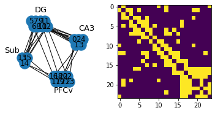
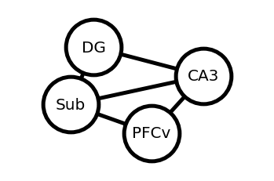
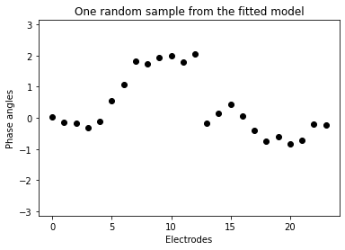
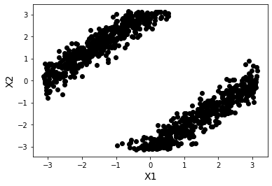
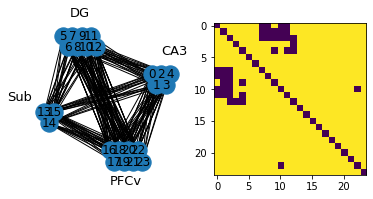
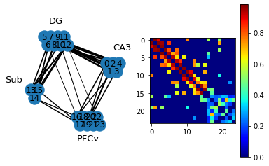

Examples¶
[1]:
#%% Importing modules and functions
import numpy as np
from numpy import pi
import matplotlib.pyplot as plt
from scipy.io import loadmat
from funsTG import (torusGraphs, sampleTG, phaseLockingValue, compNodePairsNodes)
import networkx as nx
[2]:
#%% load Data
dataMat = loadmat('anglebeta.mat')
X = dataMat['anglebeta']
[3]:
# explicitly set node positions
posNodes = {0: (21, 5), 1: (22, 4.7), 2: (23, 5), 3: (24, 4.7), 4: (25, 5), \
5: (2, 6), 6: (3, 5.7), 7: (4, 6), 8: (5, 5.7), 9: (6, 6), 10: (7, 5.7), 11: (8, 6), 12: (9, 5.7), \
13: (-2, 4), 14: (-1, 3.7), 15: (0, 4),\
16: (12, 3), 17: (13, 2.7), 18: (14, 3), 19: (15, 2.7), 20: (16, 3), 21: (17, 2.7), 22: (18, 3), 23: (19, 2.7)}
posNodeGroup = {'CA3': (21, 5), 'DG': (2, 6), 'Sub': (-2, 4), 'PFCv': (12, 3)}
nodeGroupLabels= [x[0].tolist().pop() for x in dataMat['subregions']]
groupLabels = ('CA3', 'DG', 'Sub', 'PFCv')
[4]:
# Fit torus graphs model
selMode = (True, True, False)
nodeGraph, groupNodeGraph, num, nodePairs, groupNodePairs, phiHat, covPhiHat \
= torusGraphs(X, edgesAlphaLevel=0.05, selMode=selMode, groupLabels = groupLabels, nodeGroupLabels = nodeGroupLabels, groupEdgesAlphaLevel=0.001/6)
[5]:
# Network with individual electrodes as nodes
fig, ax= plt.subplots(1,2)
plt.axes(ax[0])
nx.draw_networkx(nodeGraph, posNodes)
ax[0].margins(0.20)
plt.text(23,5.5,'CA3', fontsize = 13)
plt.text(3.5,6.5,'DG', fontsize = 13)
plt.text(-10,4.3,'Sub', fontsize = 13)
plt.text(12,2.1,'PFCv', fontsize = 13)
ax[0].set_aspect(1/ax[0].get_data_ratio())
plt.axis("off")
plt.axes(ax[1])
plt.imshow(nx.to_numpy_matrix(nodeGraph))
plt.show()
options = {
"font_size": 20,
"node_size": 5000,
"node_color": "white",
"edgecolors": "black",
"linewidths": 5,
"width": 5,
}

[6]:
# Netwoork with brain sub-regions as nodes
nx.draw_networkx(groupNodeGraph, posNodeGroup, **options)
ax = plt.gca()
ax.margins(0.40)
plt.axis("off")
plt.show()

[7]:
#%% Gibbs sampling from TG
numSamp = {'nodes':num['nodes'], 'trials': 1}
Xsampled = sampleTG(numSamp, phiHat, nodePairs, selMode = selMode,\
burnIn = 500, nThin = 100)
plt.plot(Xsampled,'ko')
plt.xlabel('Electrodes')
plt.ylabel('Phase angles')
plt.title('One random sample from the fitted model')
plt.ylim([-pi, pi])
plt.show()

[8]:
#%% Another example of TG sampling
numSamp = {'nodes':2, 'trials': 1000}
nodePairs = {'nodes' : np.array([[0,1]])}
newPhi = np.block([ 0, 0, 0, 0, 8*np.cos(pi), 8*np.sin(pi), 0, 0 ])
Xsampled = sampleTG(numSamp, newPhi, nodePairs)
plt.plot(Xsampled[0,:], Xsampled[1,:], 'ko')
plt.xlabel('X1', fontsize=14)
plt.ylabel('X2', fontsize=14)
plt.show()

[9]:
# %% PLV, 24dim network graph, figures S8
num = {'nodes': X.shape[0]}
nodePairs = {'nodes':compNodePairsNodes(num['nodes'])}
plv, plvPvals = phaseLockingValue(X, nodePairs)
plvPairsElecActive = nodePairs['nodes'][plvPvals <= 0.0005, :]
plvGraph = nx.Graph()
plvGraph.add_nodes_from(range(num['nodes']))
plvGraph.add_edges_from(plvPairsElecActive)
fig, ax= plt.subplots(1,2)
plt.axes(ax[0])
nx.draw_networkx(plvGraph, posNodes)
plt.text(23,5.5,'CA3', fontsize = 13)
plt.text(3.5,6.5,'DG', fontsize = 13)
plt.text(-10,4.3,'Sub', fontsize = 13)
plt.text(12,2.1,'PFCv', fontsize = 13)
ax[0].set_aspect(1/ax[0].get_data_ratio())
plt.axis("off")
plt.axes(ax[1])
plt.imshow(nx.to_numpy_matrix(plvGraph))
plt.show()

[10]:
# %% Conditional coupling, case of phase difference model with uniform margins,
# see Section 4.4. in the paper.
selMode = (False, True, False)
nodeGraph, groupNodeGraph, num, nodePairs, groupNodePairs, phiHat, covPhiHat \
= torusGraphs(X, edgesAlphaLevel=0.05, selMode=selMode,
groupLabels = groupLabels,
nodeGroupLabels = nodeGroupLabels,
groupEdgesAlphaLevel=0.001/6)
activeLogical = nodePairs['pVals'] <= 0.05
edgeWidth = nodePairs['condCoupling'][activeLogical]
weigthedActiveEdges = np.zeros((sum(activeLogical), 3))
weigthedActiveEdges[:,:2] = nodePairs['nodes'][activeLogical]
weigthedActiveEdges[:,2] = edgeWidth
scaling_factor = 3
condCouplingGraph = nx.Graph()
condCouplingGraph.add_nodes_from(range(num['nodes']))
condCouplingGraph.add_weighted_edges_from(weigthedActiveEdges)
fig, ax= plt.subplots(1,2)
plt.axes(ax[0])
nx.draw_networkx(condCouplingGraph, posNodes, width=scaling_factor*edgeWidth)
plt.text(23,5.5,'CA3', fontsize = 13)
plt.text(3.5,6.5,'DG', fontsize = 13)
plt.text(-10,4.3,'Sub', fontsize = 13)
plt.text(12,2.1,'PFCv', fontsize = 13)
ax[0].set_aspect(1/ax[0].get_data_ratio())
plt.axis("off")
plt.axes(ax[1])
plt.imshow(nx.to_numpy_matrix(condCouplingGraph))
plt.colorbar()
plt.set_cmap('jet')
plt.show()
